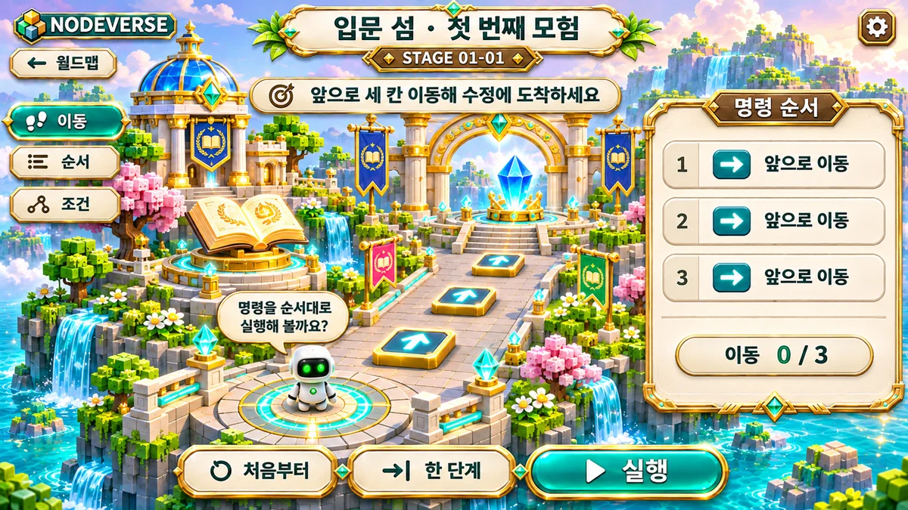
THE FIRST STEP
모든 모험은, 작은 질문에서.
변수와 조건, 반복. 첫 번째 코딩 개념을 발견하는 섬입니다.
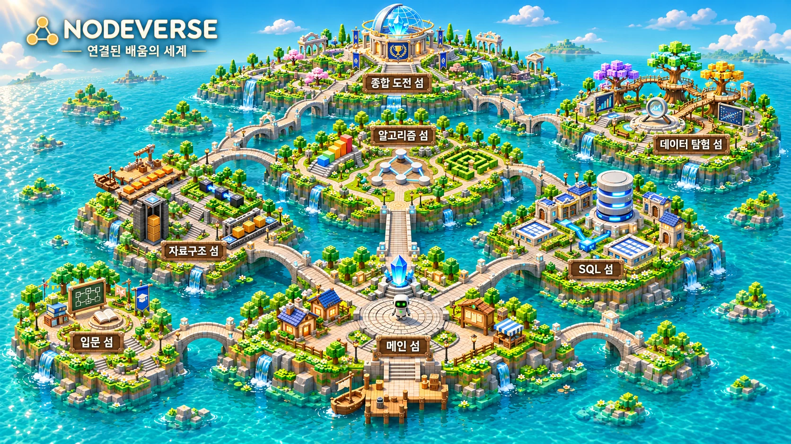
EXPLORE. CONNECT. UNDERSTAND.
자료구조부터 알고리즘, 데이터까지.
섬과 섬을 건너며 지식을 연결해 보세요.
LEARNING, MADE TANGIBLE
줄지어 놓인 배열, 서로 연결된 노드, 차곡차곡 쌓이는 스택. 추상적인 개념을 작은 섬의 풍경으로 만나보세요.
NODEVERSE는 코딩과 데이터를 탐험하는 학습 게임입니다. 아래에서 웹 미니게임을 직접 조작해보고 나만의 여정을 시작하세요.
CHOOSE YOUR NEXT ISLAND

THE FIRST STEP
변수와 조건, 반복. 첫 번째 코딩 개념을 발견하는 섬입니다.
◇ 메인 섬은 모든 여정이 시작되는 곳. 여섯 학습 섬으로 이어지는 다리를 만나보세요.
10 DATA STRUCTURE MINI-GAMES
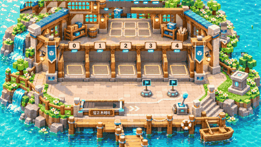
ST01 배열 (Array)연속된 인덱스 공간에 상자를 채우고 빈틈없이 밀착시키는 배열의 기본 동작 원리를 배웁니다.
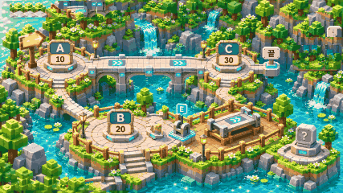
ST02 연결 리스트 (Linked List)끊어진 화물 열차 레일을 포인터 케이블로 올바른 순서대로 연결하여 HEAD부터 null까지 잇습니다.
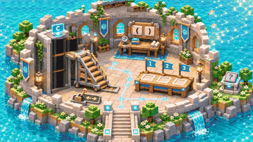
ST03 스택 (Stack)가장 마지막에 넣은 기록부터 꺼내는 후입선출(LIFO) 원리를 통해 되돌리기(Undo) 스택을 완성합니다.
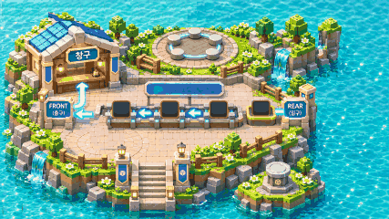
ST04 큐 & 덱 (Queue / Deque)FRONT와 REAR 게이트를 조작하여 먼저 온 손님을 먼저 안내(FIFO)하거나 양방향 덱으로 응급 손님을 우선 처리합니다.
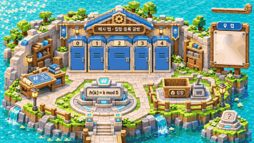
ST05 해시 (Hash Table)문자열 키(Key)를 해시 함수에 통과시켜 버킷 주소를 구하고, 해시 충돌(Collision)을 해결하는 매핑 기술을 체험합니다.
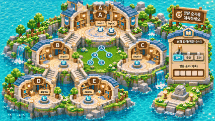
ST06 이진 트리 (Binary Tree)뿌리(Root) 노드에서 출발하여 왼쪽과 오른쪽 가지로 뻗어나가는 계층적 자료구조와 전위/중위/후위 순회를 학습합니다.
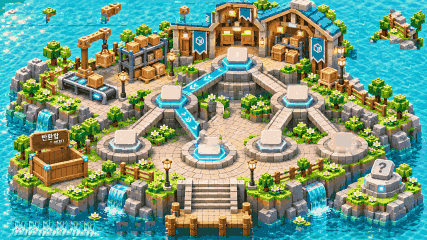
ST07 이진 탐색 트리 (BST)현재 값보다 '작으면 왼쪽, 크면 오른쪽' 규칙을 지키며 원하는 데이터를 O(log N) 속도로 빠르게 찾아내는 탐색 퍼즐입니다.
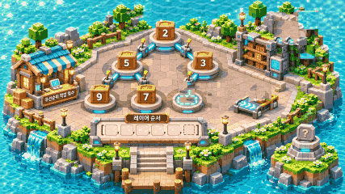
ST08 힙 & 우선순위 큐 (Heap)가장 긴급한 작업이 항상 맨 위(Root)에 오도록 노드를 위아래로 교환(Heapify)하는 완전 이진 트리 힙을 구현합니다.
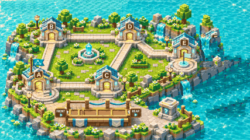
ST09 그래프 (Graph)여러 지점(정점)과 경로(간선)로 복잡하게 얽힌 통신 네트워크에서 최단 경로와 연결 상태를 탐색(BFS/DFS)합니다.
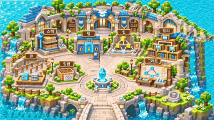
ST10 통합 실전 (Integrated)앞서 배운 모든 자료구조를 조합하여 복합 시스템의 병목 현상을 해결하는 최종 종합 챌린지입니다.
PLAY IN YOUR BROWSER
A LITTLE WINDOW INTO OUR WORLD
콘셉트 이미지에 움직임과 자막을 더한 소개 영상입니다. 실제 플레이 녹화가 아니며, 음성·음악은 없습니다.
영상 다운로드 ↓YOUR OWN PACE
지금의 나에게 맞는 난이도로
여정을 시작하세요.
일상 속 비유와 함께 기초 개념을 만나보세요.
구조와 동작을 살펴보며 이해의 깊이를 더하세요.
각각의 지식을 연결해 더 큰 문제에 도전하세요.
THE NEXT CHAPTER IS YOURS
3D 연결섬 풀버전 프로젝트와 코드는 GitHub에 투명하게 공개되어 있습니다.
GitHub 프로젝트 둘러보기 ↗Godot 4.7 3D 메타버스 + 2D 자료구조 10종 미니게임 + 실시간 데이터 파이프라인